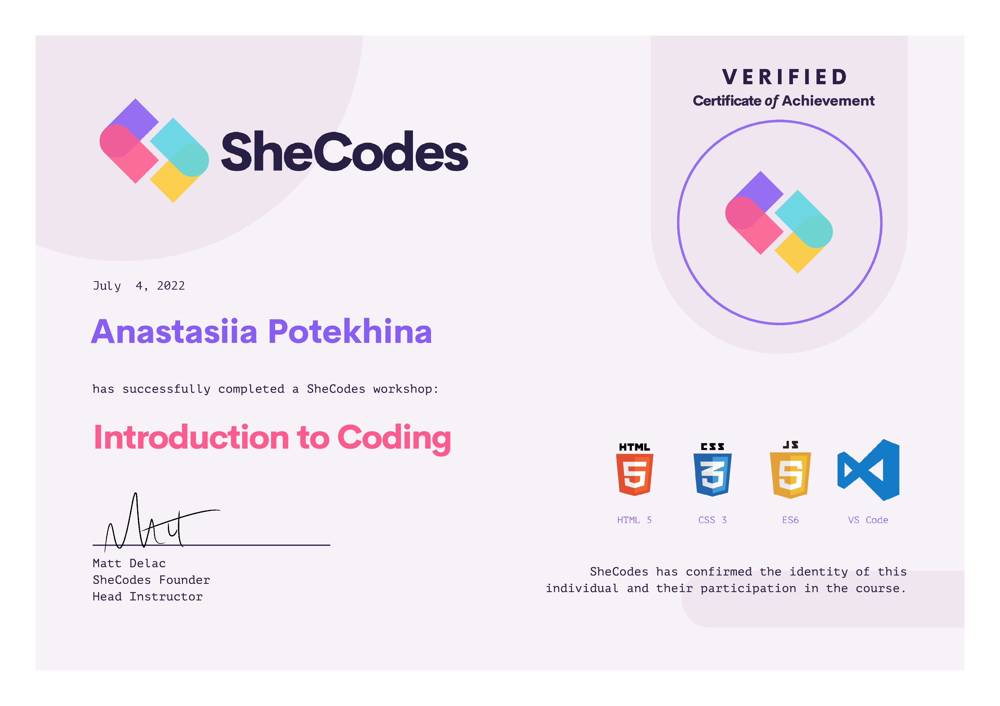
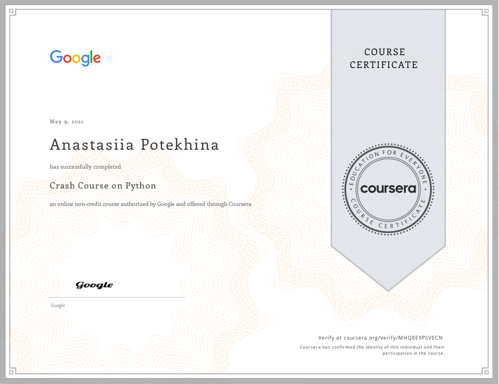
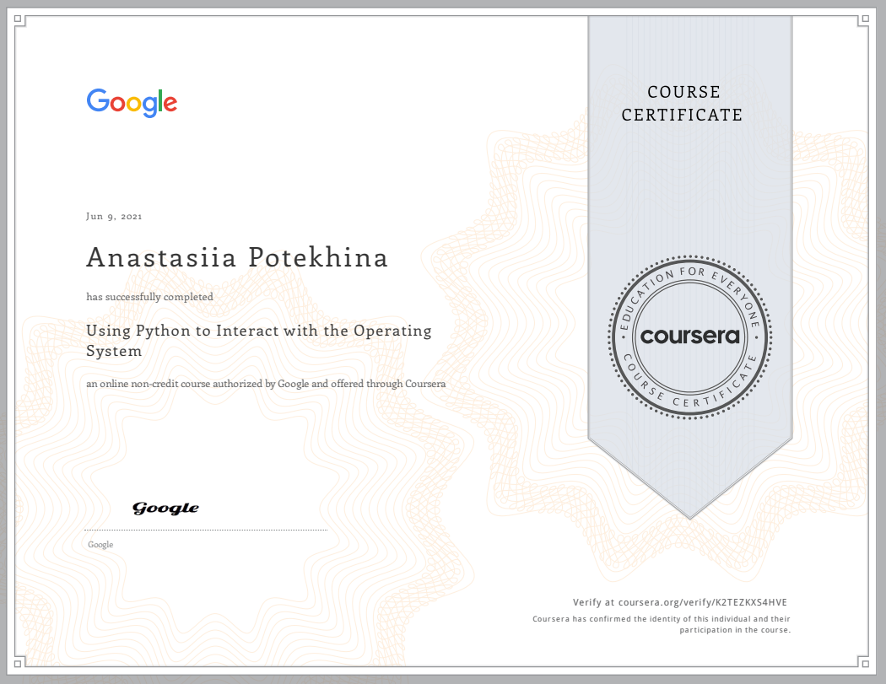
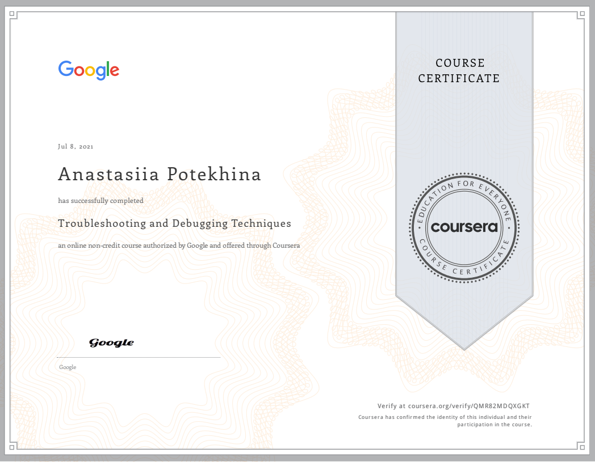
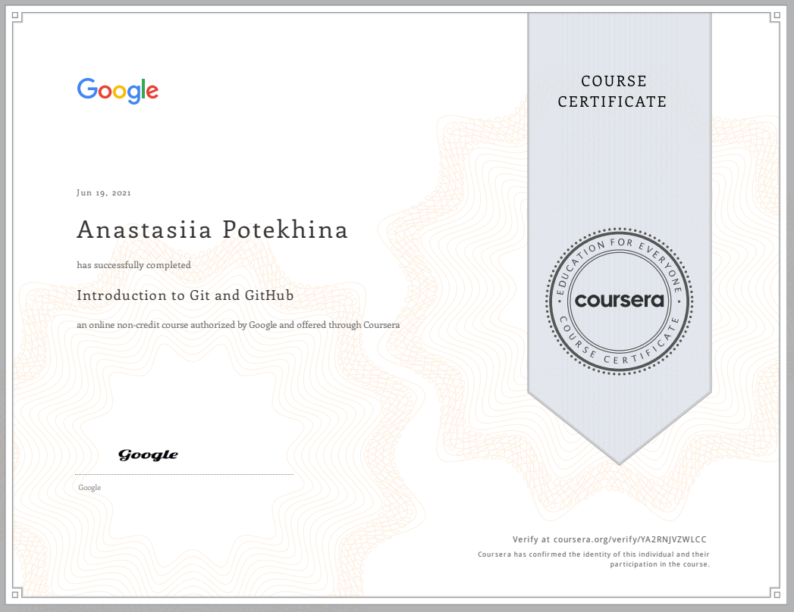
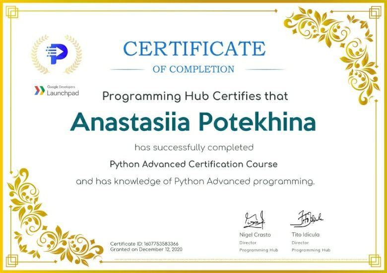

I am a former MBA student, living in Stockholm, Sweden, who is passionate about programming and problem solving. My interest for programming grew from the subject of my master thesis which was "Blockchain technology for credit risk management". I have most experience in Python and most of my projects were written in Python language but I also have basic knowledge of SQL, JavaScript, HTML and CSS, C, MatLab.
Bachelor degree in Financial Management, 240 ECTS
Transbaikal State University, 2011-2015
1-year Master in Financial Management , 60 ECTS
Transbaikal State University, 2015-2016
Tempus program student, Master in Business Administration, 60 ECTS
Umeå University, 2016-2017
"Introduction to HTML, CSS and JavaScript" by SheCodes
"Python Crash Course" by Coursera and Google
"Using Python to Interact with the Operating System" by Coursera and Google
"Troubleshooting and Debugging Techniques" by Coursera and Google
"Introduction to Git" by Coursera and Google
"Advanced Python programming" by ProgrammingHub
CS50 Introduction to Computer Science by Harvard University and OpenCourseWare (ongoing)
My mother-tongue is Russian
I speak English fluently, my master studies in Sweden was held in
English.
I can also speak Swedish at SAS GRUND 4 level. I was learning Swedish
at Umeå University, SFI and Komvux schools.